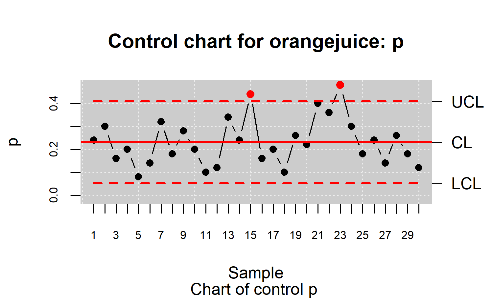
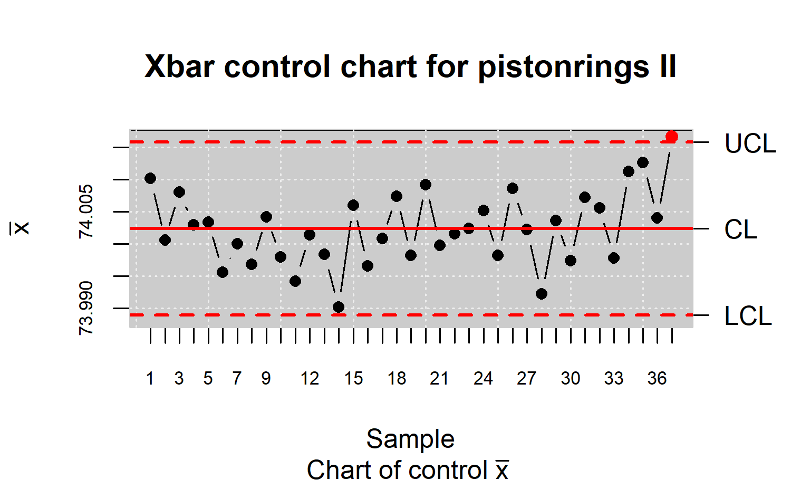
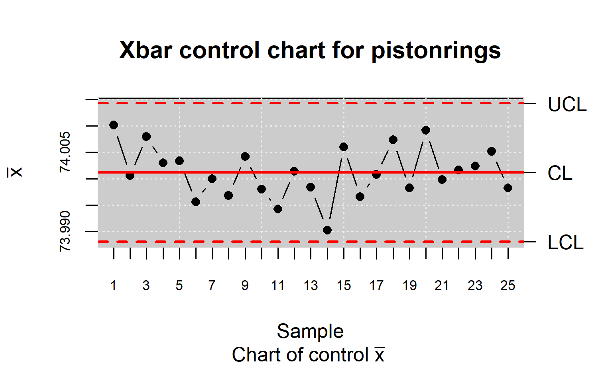
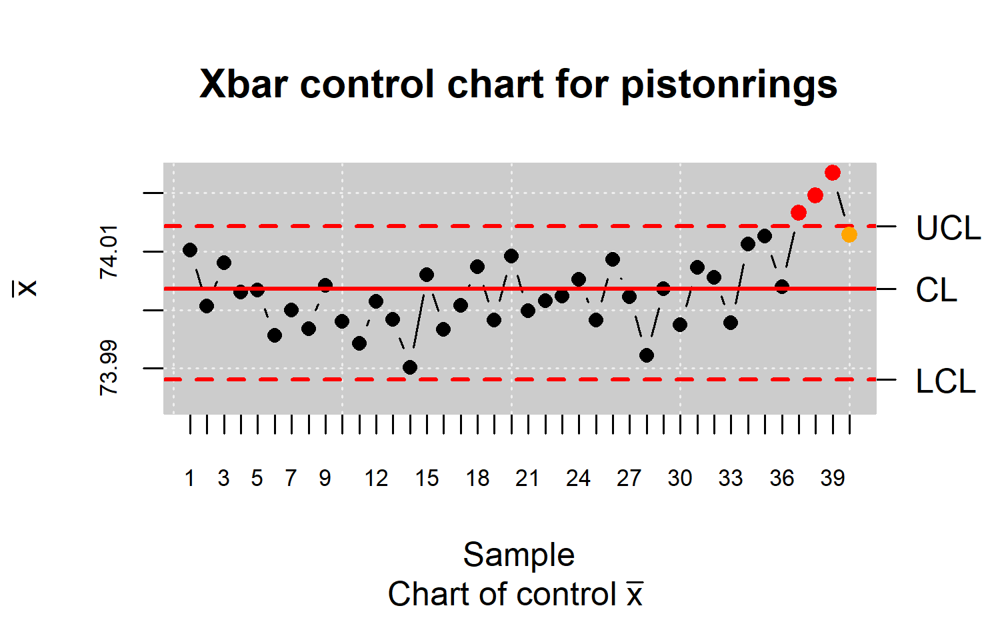
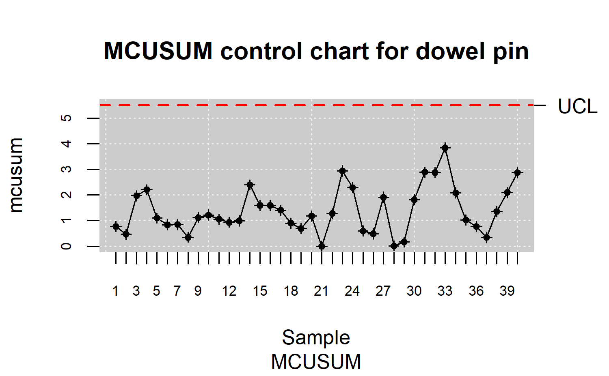
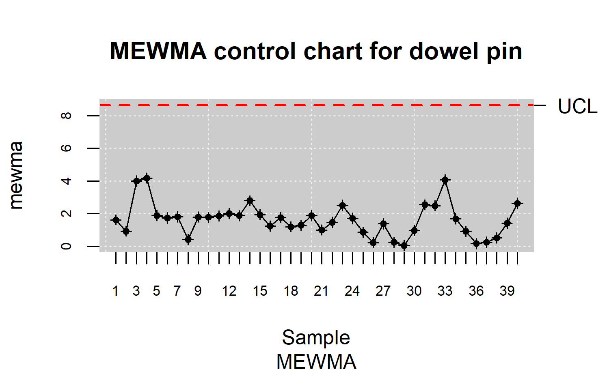
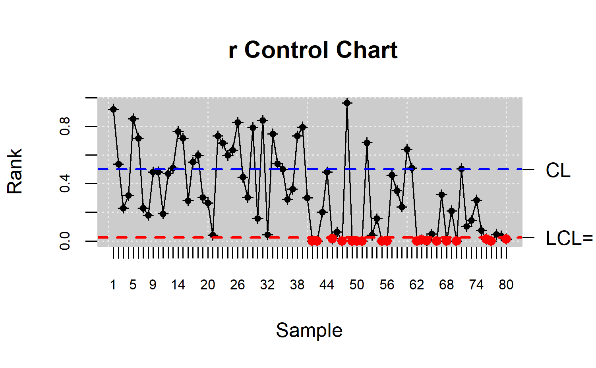
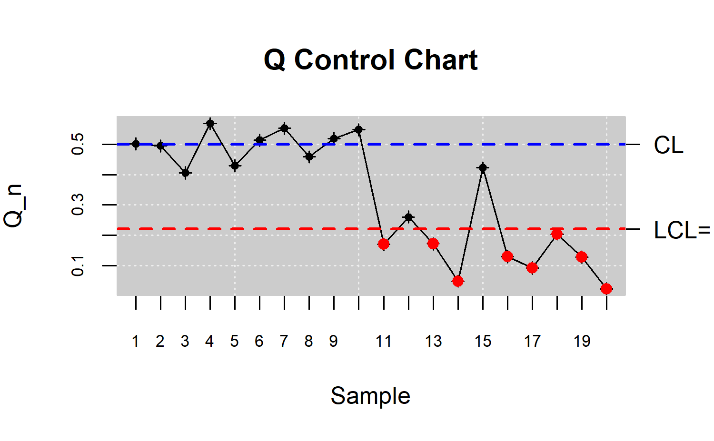

Abstract: This work introduces and describes the R package qcr for Statistical Quality Control (SQC). The qcr package includes a comprehensive set of univariate and multivariate SQC tools that completes and increases the SQC techniques available in R. It combines traditional and new exible SQC procedures to manage real quality control problems in industry and consulting. Apart from integrating diferent R packages devoted to SQC (qcc, MSQC), qcr provides new nonparametric tools that are highly useful when Gaussian assumption is not met. This package provides a comprehensive set of functions in R to programme attribute and variable control charts, from a parametric and nonparametric point of view, in a univariate or multivariate way. In order to be applied in real industry problems, qcr estimates the natural control limits and monitor critical variables in a practical and automatic way. The proposed package computes standard univariate control charts for individual measurements, \(\bar{x}, S, R, p, np, c, u, EWMA\) and \(CUSUM\). In addition, it includes functions to perform multivariate control charts such as Hotelling T2, MEWMA and MCUSUM. Moreover, new nonparametric alternatives based on data depth are implemented in this package: \(r, Q\) and \(S\) control charts. Consequently, robust alternatives of capability indices are now available in R through qcr library. The qcr library also estimates the most complete set of capability indices from first to fourth generation, and performing the corresponding capability analysis graphical outputs, including the process capability plots.
Keywords: statistical quality control, Shewhart control charts, multivariate control charts, nonparametric control charts, data depth, capability index, R.
Introduction
Throughout the last decades, there has been an increasing interest to measure, improve and control the quality of products, services and procedures. This is connected to the strong relationship between quality, productivity, prestige, trust and brand image. In fact, implementing procedures of statistical quality control (SQC) are currently related to increasing companies’ competitiveness. The concept of quality control has been extended from the first definitions based on the idea of adjusting production, to a standard model to satisfy customer requirements and include all participants. Nowadays, SQC is not only applied to manufactured products but to all industrial and service processes. The use of diferent SQC techniques were standarized With the development of the Six Sigma method by Motorola in 1997 . Six Sigma is a methodology or even philosophy focused on the variability reduction that promotes the use of statistical methods and tools in order to improve processes in industry and services. Six Sigma’s goal is to reach maximum 3.4 defects per million of events or opportunities (DPMO) meeting the customer requirements. The Six Sigma application is composed by five stages: Define, Measure, Analyze, Improve, and Control (DEMAIC). The Six Sigma methodology itself indicates which technique to apply at each stage of the improvement process. The Figure shows some representative statistical techniques applied in each of the Six Sigma stages. The two most representative statistical tools of SQC are the control charts and the process capabity analysis . Therefore, the proposed qcr package has been developed in order to provide users an exhaustive, comprehensive and free set of programming tools to apply control charts and perform capability analysis in the SQC framework.
The control stage is characterized by the use of tools based on anomaly detection and correction . The most representative techniques of this stage and the primary tool of the Statistical Process Control (SPC) are the control charts . They have been developed to evaluate the process performance and at any time. The use of control charts prevents the process getting out of control, and helping to detect the assignable causes corresponding to variations of the critical-to-quality features (CTQs), thus performing process changes when actually required. Furthermore, control charts provide estimates of the natural range of process variation (natural control limits), allowing us to compare this range with those limits specified by standards, company managers or customers (specification limits). Hence, the process monitoring can be carried out by comparing each new observation with these natural limits, preventing defects in the final product. Briefly, a control chart is a two dimensional graph whose axis represents the variable or attribute that is being monitored (CTQ variables). They were introduced by Shewhart in 1924 at Bell laboratories. The estimation of natural control limits of the CTQ variables is developed by a process composed of two phases: In Phase I, the natural control limits are estimated using a preliminary sample (calibration sample) where we assume that the causes of variation are only random. In Phase II, each new observation is plotted on the control chart along with the natural limits obtained in the previous step. The set of new observations (twhich are not used to calculate the natural control limits) make up the so-called monitoring sample. Patterns, observations of out of control limits, runs of more than six observations on one side of the central line, among others, are some of the diferent criteria to identify out of control states in a specific process, providing also valuable information about the detection of any assignable causes of variation in the monitoring.
\(~~~~~~\)The most used control charts are based on the assumptions of normality and independence of the studied CTQ variables. These charts are used to control position and dispersion of CTQ attributes and variables. Figure shows some of the most important types of control charts. These can be classified according to the type of feature that is being controlled (attribute or variable), the variable dimension (univariate or multivariate), and assuming or not a parametric 65 distribution of the variable (parametric or nonparametric).
The qcr package provides charts for the mean (\(\bar{x}\)), standard deviation (\(s\)), range (\(R\)), individual measurements (\(I\)), moving ranges (\(MR\)), proportion of nonconforming units (\(p\)), number of nonconforming units (\(np\)), number of defects per unit (\(c\)), mean number of defects per control unit (\(u\)), exponentially weighted moving average (EWMA), and cumulative sum control chart (CUSUM). The last two techniques are also called memory control charts and they are the specially designed to detect shifts of less than two standard deviations, both when using rational samples or individual measurements. On the other hand, new control charts based on the concept of data depth and developed by are implemented in qcr. Those are the \(r, Q\) and \(S\) control charts, the nonparametric alternatives for individual measurements, mean control chart and CUSUM control chart, respectively. When more than one variable defines the process quality, multivariate control charts are applied. If the Gaussian assumption is met, Hotelling T\(^2\) control chart can be applied. If we want to detect small deviations, multivariate EWMA (MEWMA) and multivariate CUSUM (MCUSUM) can be implemented. When no parametric distribution is assumed, \(r, Q\) and \(S\) charts can be used.
Another interesting SQC tool, which is very useful in industry, is the Process Capability Analysis (PCA). It estimates how well a process meets the tolerances defined by the company, customers, standards, etc., by comparing the specification tolerances with respect to the natural range of variation of CTQ features. The process capability is measured using capability indicators, Process Capability Ratio (PCR) is a numerical score that helps the manufacturers know whether the output of a process meets the engineering specifications. Large PCR values show that the industrial or service process is capable of meeting the customer requirements. There have been many diferent PCRs developed in the last four decades that require the Gaussian assumption for the CTQ variable . But many processes in industry and real applications do not meet this hypothesis, thus we could innacuratelly estimate the capability using PCR, hence many authors have studied diferent nonparametric alternatives to traditional PCR .
The qcr package has been developed in R under the 90 GNU license. Nowadays there are other R packages that currently provide quality control tools for users. The use of each one is shown in Figure . The qcc package was developed by Professor Luca Scrucca of the Department of Economics, Finance and Statistics at the University of Perugia. It enables us to perform Shewhart quality control charts for variables and attributes, as well as the CUSUM and EWMA charts for detecting small changes in the CTQ variable. Multivariate analysis is performed applying the Hotelling T\(^2\) control chart. Additionally, it has functions implemented to obtain the operating characteristic curves (OC) and to estimate process capability analysis indices. Pareto and Ishikawa diagrams are also implemented. Otherwise, the IQCC package is maintained by Professor Emanuel P. Barbosa of the Institute of Mathematics in the State University of Campinas. It has a smaller number of control charts implemented but it incorporates multivariate graphics. The qualityTools package was developed to aid learning in quality sciences. The Figure shows some of its utilities, e.g. capability analysis (providing a comprehensive set of parametric distributions) and design of experiments. In addition, the SixSigma library provides alternative functions to qualityTools and qcc packages, and the possibility of 104 implementing process maps.
\(~~~~~~\)Furthermore, there are other libraries specifically focused on control chart applications. Namely, the spcadjust that allows us to estimate the calibration control limits of Shewhart, CUSUM and EWMA control charts, and the spc which provides tools for the evaluation of EWMA, CUSUM and Shiryaev-Roberts control charts by using Average Run Length and RL quantiles criteria. Moreover, the MSQC package is a set of tools for multivariate process control, mainly control charts. It contains the main alternatives for multivariate control charts such as Hotelling (T\(^2\)), Chi squared, MEWMA, MCUSUM and Generalized Variance control charts. It also includes some tools to evaluate the multivariate normal assumption. The corresponding multivariate capability analysis can be performed using the MPCI library that provides diferent multivariate capability indices. It is also interesting to mention the edcc package for its ecomomic design of control charts by minimizing the expected cost per hour of the studied process.
\(~~~~~~\)In this article, the new qcr library, which implements a great deal of the statistical tools for quality control, is presented. The aim is to provide the scientific community and quality assurance users a computer application that allows simple and eficient handling of statistical tools for quality control, which are fundamental techniques in the Six Sigma methodology: control charts for variables and attributes, and capability analysis. It is important to emphasize that the qcr package also includes new applications such as nonparametric approaches of control charts and capability indices, which are currently unavailable in the R software.
Datasets in the qcr package
The qcr package contains new databases (see table ) based on study cases tackled by the authors during their professional activity as well as well-known datasets implemented on other packages focused on statistical quality control such as:
archery1: It consists of a stage in which the archer shoots 72 arrows. The information is given in x and y coordinates. It is implemented in the
MSQCpackage (Santos-Fernandez ).circuit: Number of nonconformities observed in 26 successive samples of 100 printed circuit boards. It is implemented in the
qccpackage (Scrucca ).dowel1: Diameter and length of a dowel pin. It is implemented in the
MSQCpackage (Santos-Fernandez ).orangejuice: Frozen concentrated orange juice is packed in 6-oz cartons. These cartons are formed on a machine by spinning them from a cardboard stock and attaching a metal bottom panel. A can is then inspected to determine whether, when filled, the liquid could possibly leak either on the side seam or around the bottom joint. If this occurs a can is considered nonconforming. The data were collected as 30 samples of 50 cans each at half-hour intervals over a three-shift period in which the machine was in continuous operation. It is implemented in the
qccpackage (Scrucca ).pcmanufact: A personal computer manufacturer counts the number of nonconformities per unit on the final assembly line. He collects data on 20 samples of 5 computers each. It is implemented in the qcc package (Scrucca ).
pistonrings: Piston rings for an automotive engine are produced by a forging process. The inside diameter of the rings manufactured by the process is measured on 25 samples, each of size 5, drawn from a process being considered ‘in control’. It is implemented in the
qccpackage (Scrucca ).
Univariate statistical quality control with Shewhart control charts
\(~~~~~~\)The control chart is a useful tool in statistical process control for monitoring and controlling manufacturing processes . It is an on-line process control technique used for detecting the occurrence of any significant process mean (or variability) change and, accordingly, calling for a corrective action. The construction of a control chart is equivalent to the plotting of the acceptance regions of a sequence of hypothesis tests over time. Namely, the \(\bar{x}\) chart is a control chart used to monitor the process mean \(\mu\). It plots the sample means, \(\bar{X}\)’s, corresponding to subgroups of the \(\{X_1,X_2, \ldots\}\) observations and is equivalent to test the hypotheses \(H_0 : \mu = \mu_0\) versus \(H_{\alpha} : \mu \neq \mu0\) (for some target value \(\mu_0\)) conducted over time, using \(\bar{x}\) as the test statistic. Here we assume that \(\{X_1,X_2, \ldots\}\) are the sample measurements of a particular CTQ feature that follows the \(F\) distribution with mean \(\mu\) and standard deviation \(\sigma\). When there is insuficient evidence to reject \(H_0\), we can state that the process is under control; otherwise, the process is out of control. In other words, processes are under control when their sources of variation are only the sources common to the process . The decision to reject or not \(H_0\) is based on the value of the sample mean \(\bar{x}\) observed at each time interval . The control charts are easy to construct, visualize, and interpret, and most important, have proven their efectiveness in practice since the 1920’s.
Definition of univariate quality control objects and statistics
\(~~~~~~\)Control charts are defined, on the one hand, by a center line that represents the average value of the the CTQ feature corresponding to the in-control state and, on the other hand, two horizontal lines, called the upper control limit (UCL) and the lower control limit (LCL). The region between the control limits corresponds to the region where \(H_0\) is not rejected (defined in the previous section).
As a consequence, the process will be out of control when an observed rational sample or an individual measurement falls outside the limits. This suggests that the studied process may have been afected by some special or assignable causes, out of the common ones. Even although all the observations (rational samples or individual measurements) were inside the control limits, the process could be out of control if the points which represent them in the control chart follow systematic patterns. Consequently, diferent methods such as the Western Electric rules have been developed in order to identify those sequences or non random patterns in a control chart, and therefore helping to detect out of control states . In conclussion, control charts are a very useful tool to detect shifts with respect to the probability distribution that defines the state under control (and characterizes the quality level) of a process, whenever using the proper estimated control limits.
\(~~~~~~\)Let \(w\) be a sample statistic that measures a quality characteristic of interest, and suppose that the mean of \(w\) is \(\mu_w\) and the standard deviation of \(w\) is \(\sigma_w\). Then the center line, the upper control limit, and the lower control limit become:
\[\begin{align*} \mbox{UCL} & = \mu_{w}+ L\sigma_{w}\\ \mbox{CL} & = \mu_{w}\\ \mbox{LCL} & = \mu_{w}- L\sigma_{w} \end{align*}\]
Where \(L\) is the “distance” of the control limits from the center line, expressed in standard deviation units. In designing a control chart, the sample size and sampling frequency must be specified. Small shifts in the process will be detected much easier when large samples are measured. Taking large samples would be the desirable situation, but it is not feasible in many cases either from an economic point of view or by the characteristics of the process studied. The Average Run Length (ARL) allows us to choose the rational sample size and sampling frequency. It is defined by the number of rational samples that, on average, is necessary to monitor and plot in a control chart before an out of control state is identified. If the observations obtained from the CTQ feature of the process are not correlated, the ARL can be estimated using the Shewhart control charts by the expression
\[\begin{align*} \mbox{ARL} & = \frac{1}{p} \end{align*}\]
where \(p\) is the probability that any point exceed the natural control limits. The performance of the control charts can be evaluated using this equation, although sometimes it is recommended to express the control chart performance in terms of its Average Time to Signal (ATS), which is defined as
\[\begin{align*} \mbox{ATS} & = \mbox{ARL}\times h\\ \end{align*}\]
whereby \(h\) is the fixed time interval in which samples are taken.
The functions that compute the quality control statistics for the diferent univariate control charts (involving continuous, attribute or count data) are shown in Table . More details are given in the following sections.
Statistical quality control with Shewhart control charts
Control charts can also be divided into two categories. If the CTQ feature of a specific process can take an infinite number of values in a continuous interval, it is called variable, and the corresponding charts are named control charts for variables. Otherwise, if the CTQ feature is not measured in a continuous scale, namely we only can tag each unit of product either as conforming or nonconforming on the basis of whether or not it possesses certain attributes, or alternatively we may count the number of nonconformities (defects) appearing on a unit of product, we are talking about attributes and attribute control charts.
In order to illustrate the use of the qcr package, control charts for variables and attributes will be plotted, the construction of control limits will be specified in each section. The first steps are loading both the package and the dataset
R> library("qcr")
R> data("pistonrings")
The pistorings data frame consists of 200 observations measured in 25 samples each one of size 5.
Control charts for X-bar, R and S
When working with CTQ variables, monitoring both their mean and variability is necessary. Hence, the \(\bar{x}\) chart is used to control the process mean while the process variability can be monitored with the control chart for the range, so called R control chart. Taking into account that the control limits of the \(\bar{x}\) chart depend on the process variability estimation, it is recommended to develop the R chart in advance. After assessing the process is in control in terms of variability, these estimates can be used to obtain the natural control limits of the \(\bar{x}\) chart in a more reliable way. Supposing that \(i = 1, \ldots, k\) rational samples of size \(n\) are avaliable, and let \(R_i\) be the range of the \(i\)th sample. The center line and control limits of the R chart are as follows:
\[\begin{align*} \mbox{LCL} & = D_3R\\ \mbox{CL} & = R\\ \mbox{UCL} & = D_4R \end{align*}\]
whereby \(D_4\) and \(D_3\) are constants tabulated for diferent values of \(n\) , and \(\bar{R}=\frac{1}{k}\sum_{i}R_i\) is the average of the \(k\) ranges. In R, these control limits, as well as the center line, are computed using the qcs.R() function, and the resulting object may be printed by using the summary function
R> x <- droplevels(pistonrings[1:125, ])
R> res.qcs <- qcs.R(x, data.name = "pistonrings", std.dev = "UWAVE-R")
R> summary(res.qcs)
#> R chart for pistonrings
#>
#> Summary of group statistics:
#> R
#> Min. :0.00800
#> 1st Qu.:0.01800
#> Median :0.02100
#> Mean :0.02276
#> 3rd Qu.:0.02600
#> Max. :0.03900
#>
#> Group sample size: 5
#> Number of groups: 25
#> Center of group statistics: 0.02276
#> Standard deviation: 0.009785039
#>
#> Control limits:
#> LCL UCL
#> 0 0.04812533
#>
#> Number beyond limits: 0
#>
#> Number violationg runs: 0The corresponding chart can be generated with the plot() method
R> plot(res.qcs, title = "Control chart for pistonrings: R")
(see Figure ). As there are not patterns, runs, nor samples out of the natural control limits, the process is assumed under control in terms of variability.
Once the variability is controled, \(\sigma\) can be estimated by using its unbiased estimator \(\hat{\sigma}=\frac{1}{d_2}\bar{R}\), where \(d_2\) is a constant tabulated for various sample sizes . Consequently, the process mean can be controled by an \(\bar{x}\) chart, considering the \(3\sigma\) control limits
\[\begin{align*} \mbox{LCL} & = \bar{x} - \frac{3}{\sqrt{n}d_2}\bar{R}=\bar{x}-A_2\bar{R}\\ \mbox{CL} & = \bar{x} \\ \mbox{UCL} & = \bar{x} + \frac{3}{\sqrt{n}d_2}\bar{R}=\bar{x}+A_2\bar{R} \end{align*}\]
where \(\bar{x}=\frac{1}{k}\sum_{i}\bar{x_i}\) is the global mean. The null hypothesis of process in control is tested by assessing if each \(\bar{x_i}\) is within the interval \([LCL,UCL]\). Assuming the measured variable is Gaussian and that the process is under control, the probability a point being within the natural control limits is 0.9973. In R, function qcs.xbar() can be applied to compute the center line and the control limits using the range for estimating the theoretical standard deviation. The corresponding chart can be generated with the plot() method
R> res.qcs <- qcs.xbar(x, data.name = "pistonrings", std.dev = "UWAVE-R")
R> plot(res.qcs, title = expression(paste("Control chart for pistonrings: ",+ bar(x))))
(see Figure ). As shown, there is no evidence that indicates the process is out of control.
The process standard deviation can also be estimated using the sample standard deviation instead of the sample range. This leads to control charts for \(\bar{x}\) and \(s\), where \(s\) is the sample standard deviation, and to apply the s control chart instead of the R chart, whose center line and control limits are
\[\begin{align*} \mbox{LCL} & = B_3\bar{s}\\ \mbox{CL} & = \bar{s} \\ \mbox{UCL} & = B_4\bar{s} \end{align*}\]
whereby \(B_3\) and \(B_4\) are tabulated constants which depend on \(n\) , and \(\bar{s}=\frac{1}{k}\sum_{i}s_i\) is the average of the \(k\) standard deviations. For this purpose, the qcs.S function can be used in R.
In this case, assuming that variability is controlled, \(\sigma\) is estimated by using its unbiased estimator \(\hat{\sigma}=\frac{1}{c_4}\bar{s}\). The \(3\sigma\) natural control limits for monitoring the process mean are
\[\begin{align*} \mbox{LCL} & = \bar{x} - \frac{3}{\sqrt{n}c_4}\bar{s}=\bar{x}-A_3\bar{s}\\ \mbox{CL} & = \bar{x} \\ \mbox{UCL} & = \bar{x} + \frac{3}{\sqrt{n}c_4}\bar{s}=\bar{x}+A_3\bar{s} \end{align*}\]
which also can be programmed in R by using the qcs.xbar() function, specifying std.dev = "UWAVE-SD" to use the sample standard deviation.
p and np control charts
The \(p\) and \(np\) charts are the more representative types of atribute control charts. If \(k\) random samples of \(n\) items are avaliable, and denoting with \(X_i\) the number of defective items in each sample, assuming that an item is nonconforming with probability \(p\) and also that the items successively produced are independent, the nonconfomities follow a binomial distribution with mean \(np\) and standard deviation \(\sqrt{np(1\mbox{-}p)}\). Alternatively, the sample nonconforming item fraction \(\hat{p}_i =\frac{X_i}{n}\) has mean \(p\) and standard deviation \(\sqrt{p(1\mbox{-}p)/n}\). In both cases the asymptotic distribution is normal, from which the center line and control limits of the Shewhart chart can be worked out. For the \(p\) control chart, they are given by
\[\begin{align*} \mbox{LCL} & = \bar{p} - 3\sqrt{\frac{\bar{p}(1-\bar{p})}{n}}\\ \mbox{CL} & = \bar{p} \\ \mbox{UCL} & = \bar{p} + 3\sqrt{\frac{\bar{p}(1-\bar{p})}{n}} \end{align*}\]
where \(\bar{p}=\frac{1}{k}\sum_{i}p_i\) is the estimate of the unknown propability \(p\).
To illustrate the computation of the n control charts, the orangejuice dataset (described in Section 1) will be considered. The qcs.p() function can be used to compute statistics required for the \(p\) chart. It can be directly applied to the data
R> data("orangejuice")
R> res.qcs <- qcs.p(orangejuice[orangejuice$trial, 1:2], +
\(~~~~~~~~~~~~~~~~~~~~~~~~~~~~~~~~\)sizes = orangejuice$size[orangejuice$trial])
or alternatively, a qcd object (quality control data) could be created first
R> datos.qcd <- qcd(data = orangejuice[orangejuice$trial, ], var.index = 1,
\(~~~~~~~~~~~~~~~~~~~~~~~~~~~~~~~~\)+ sample.index = 2, sizes = orangejuice$size, type.data = "atributte")
R> res.qcs <- qcs.p(datos.qcd)
R> plot(res.qcs, title = "Control chart for orangejuice: p")

The resulting chart is shown in Figure . Samples 6 and 20 are outside the control limits and should be removed from the control limit calculations since assignable causes have been found. Namely, sample 6 was examined by an inexperienced inspector who overlooked several types of nonconformities. In addition, the large number of nonconformities in sample 20 was due to a problem of temperature control in the welding machine .
If the objective is to analyze the average number of nonconformities rather than their proportion, the \(np\) charts can be used. The statistics for this chart can be computed in R with the qcs.np() function. There are other alternatives to perform control of attributes such as the \(c\) and \(u\) charts, based on Poisson distribution. The \(c\) chart controls the total number of defects per unit, whereas the \(u\) chart controls the average number of nonconformities per unit. Both can be computed with the qcr package as shown in .
CUSUM chart
Cumulative sum control charts (CUSUM), proposed by to monitor the process mean, may now be developed both for individual observations and for the averages of rational subgroups. Its use is specially recommended to identify changes less than \(2\sigma\). The \(s_r\) statistic is used to determine whether the process is in control or not. It is defined by
\[\begin{align*} s_r=\displaystyle\sum_{i=1}^{r}(\bar{x}_1-\mu_0) \end{align*}\]
whereby \(\mu_0\) is the target for the process mean. Under Gaussian assumption, the center line and control limits of the chart can be deduced from \(s_r\sim N\left(r(\mu-\mu_0),\frac{r\sigma_{0}^{2}}{n}\right)\) Considering again the pistorings dataset, this chart can be analogously generated
R> res.qcd <- qcd(pistonrings, type.data = "dependence")
R> res.qcs <- qcs.cusum(res.qcd, type = "cusum")
R> plot(res.qcs, title = "Control chart for pistonrings: CUSUM")
and is shown in Figure .
EWMA control chart
The exponentially weighted moving average (EWMA) control chart was introduced by as an alternative when we are interested in detecting small shifts. The performance of the EWMA control chart is approximately equivalent to that of the cumulative sum control chart since both monitor the process mean.
Both individual observations and rational sample means can be controlled by this type of chart, where moving averages \(y_i\) are calculated by weighing the prior observations as follows
\[\begin{align*} y_i=\lambda x_i+(1-\lambda)y_{i-1} \end{align*}\]
with \(0<\lambda<1\) and \(y_0 = \mu_0\), the target. Therefore, the EWMA control chart is performed by plotting \(y_i\) versus the sample number \(i\) (or time). The center line and control limits for the EWMA control chart are
\[\begin{align*} \mbox{LCL} & = \mu_0-3\sigma\sqrt{\frac{\lambda(1-(1-\lambda)^{2i})}{2-\lambda}}\\ \mbox{LCS} & = \mu_0 \\ \mbox{UCL} & = \mu_0+3\sigma\sqrt{\frac{\lambda(1-(1-\lambda)^{2i})}{2-\lambda}} \end{align*}\]
If the value of \(i\) is high, then the control limits are:
\[\begin{align*} \mbox{LCL} & = \mu_0-3\sigma\sqrt{\frac{\lambda}{2-\lambda}}\\ \mbox{LCS} & = \mu_0 \\ \mbox{UCL} & = \mu_0+3\sigma\sqrt{\frac{\lambda}{2-\lambda}}\\ \end{align*}\]
The EWMA control chart is plotted and its corresponding statistics are estimated by using the qcs.ewma() function in the same manner as the CUSUM chart [see ].
Example of applying control charts to control the mean
The methodology to control the central trend of a CTQ variable through the application of the Phase I and II control charts is shown in this section. The case study corresponding to the pistorings dataset, with piston diameter as CTQ variable, is used for this purpose.
Stabilizing the process and estimating the natural control limits
The process to estimate the natural control limits is detailed in this section. The control limits can only be estimated in a proper way when the process is stabilized, i.e., in control. If the aim is to estimate the control limits of the piston diameter from the first forty rational samples (calibration sample) is intended, the Shewhart \(\bar{x}\) control chart can be developed through the code:
R> pistonrings.qcd <- qcd(pistonrings)
R> res.qcs <- qcs.xbar(pistonrings.qcd)
R> plot(res.qcs, title = "Xbar control chart for pistonrings I")
(see Figure ), and the results can be printed by calling
R> summary(res.qcs)
#> xbar chart for pistonrings
#>
#> Summary of group statistics:
#> xbar
#> Min. :73.99
#> 1st Qu.:74.00
#> Median :74.00
#> Mean :74.00
#> 3rd Qu.:74.01
#> Max. :74.02
#>
#> Group sample size: 5
#> Number of groups: 40
#> Center of group statistics: 74.0036
#> Standard deviation: 0.01007094
#>
#> Control limits:
#> LCL UCL
#> 73.99009 74.01712
#>
#> Beyond limits of control:
#> [1] 74.0196 74.0234
#>
#> Violationg runs:
#> [1] 74.0128(the sample range is used to estimate the variance by default). Figure shows that two points are out of the control limits and another point is within the limits but corresponds to a run, therefore the process is out of control . The next step, once the assignable causes of these shifts are identified, is to remove the points that fall out the control limits (in red) and also the runs (in orange) and after recalculate the control limits until the process is in control. The qcr library includes the state.control() function that removes the points indicative of out-of-control state and also returns a qcd object used to build a new control chart.
R> res.qcd <- state.control(res.qcs)
R> res.qcs <- qcs.xbar(res.qcd)
R> plot(res.qcs, title = "Xbar control chart for pistonrings II")

Figure still shows a point outside the control limits. Therefore, the state.control() function is used to delete it and the control limits are estimated again. Figure shows that the process is under control, thus, the control limits estimates are reliable.
R> res.qcd <- state.control(res.qcs)
R> res.qcs <- qcs.xbar(res.qcd)
R> plot(res.qcs, title = "Xbar control chart for pistonrings III")
Monitoring a process
When the process is under control (Phase I) and once the control limits are calculated, the process is monitored (Phase II). In the next case, the first 25 subsamples (more than 20 are recommended) of piston diameter are used as calibration sample in order to estimate the control limits, whereas the remaining subsamples of pistonrings dataset form the monitoring sample. It is important to stress they are not taken into account in the natural control limits calculation [see ]. In Phase II, the hypothesis that each new observation belongs to the distribution of the CTQ variable estimated in Phase I is tested. Figure shows the control limit estimation through the calibration sample. The process described by the diameter of pistons is in control. The corresponding code is:
R> x <- droplevels(pistonrings[1:125, ])
R> y <- droplevels(pistonrings[126:200, ])
R> res.qcs <- qcs.xbar(x, data.name = "Xbar control chart for pistonrings")
R> plot(res.qcs)

Once the control limits are obtained, the remaining samples are monitored (Figure ) by running
R> res.qcs <- qcs.add(x = res.qcs, value = y[, 1:2])
R> plot(res.qcs)
As Figure suggests, the process falls out of control from sample number thirty seven onwards, where the diameters are unusually high when compared with the calibration sample counterparts. These four points form a bunch pattern whose assignable cause should be identified before making any corrective actions or even recalculating the control limits due to an actual change in the process.

Warning limits
Warning limits are applied during the Phase II when using the Shewhart control charts, in order to improve their performance against small shifts. They can be defined with a semi-amplitude of about \(2\sigma\) as shown in Figure .
res.qcs <- qcs.xbar(x, data.name = "Xbar control chart for pistonrings")
R> plot(res.qcs, conf.nsigma.alert = 2)
However, the ARL is reduced when the process is actually in control. To prevent this drawback, CUSUM and EWMA control charts are excellent alternatives to the Shewhart control chart for detecting small changes (less than \(2\sigma\)) during the Phase II of the process monitoring.
Multivariate statistical quality control
When several random variables characterize the quality of a process/service, applying statistical multivariate quality control technique becomes necessary. In fact, if we analyze each variable separately, the probability that an observation of a variable will fall within the calculated limits when it is known that the process is actually under control, will no longer be 0.9973 for \(6\sigma\) amplitude. Assuming independence, it will be \(0.9973^p\), where \(p\) is the number of CTQ features, while the probability of type I will actually lead to \(\alpha'=1-(1-\alpha)^p\).
Therefore, the control limits are diferent from those drawn assuming the control of each CTQ variable independently from the others. Moreover, if the variables are dependent, the calculation of \(\alpha\) becomes more complex. This subject is particularly important today, as automatic inspection procedures make it customary to measure many parameters of each product over time.
Definition of multivariate quality control objects and statistics
In order to perform multivariate SQC, some some definitions are needed. Thus, suppose a random sample obtained from a multivariate normal distribution, \((\mbox{x}_1, \mbox{x}_2,\ldots, \mbox{x}_n)\), whereby the \(i\)th component contains observations on each of the \(p\) variables, \(x_{i1}, x_{i2},\ldots, x_{ip}\). Then, the sample mean vector is
\[\begin{align*} \bar{\mbox{x}} & =\frac{1}{n}\displaystyle\sum_{i=1}^{n}\mbox{x}_i=(\bar{x}_1,\bar{x}_2,\ldots,\bar{x}_p) \end{align*}\]
and the sample covariance matrix is
\[\begin{align*} S & =\frac{1}{n-1}\displaystyle\sum_{i=1}^{n}(\mbox{x}_i-\bar{\mbox{x}})(\mbox{x}_i-\bar{\mbox{x}})^{\mbox{T}} \end{align*}\]
with
\[\begin{align*} s_{jk} & =\frac{1}{n-1}\displaystyle\sum_{i=1}^{n}(x_{ij}-\bar{x}_j)(x_{ik}-\bar{x}_k) \end{align*}\]
The sample mean vector and sample covariance matrix are unbiased estimators of the corresponding population parameters, i.e.,
\[\begin{align*} E(\bar{\mbox{x}})=\mu=(\mu_1,\mu_2,\ldots,\mu_p)~~~~\mbox{and}~~~~E(S)=\Sigma \end{align*}\]
This section uses the dowel1 dataset (composed of two CTQ variables, diameter and length of a dowel pin, that characterize its manufacturing process) available in the MSQC package. This data set is first transformed into an array by using the mqcd() function of the qcr library
R> data("dowel1")
R> data.mqcd <- mqcd(dowel1)
Statistical control using the T\(^2\), MCUSUM and MEWMA charts
Hotelling T\(^2\) control chart
The Hotelling T\(^2\) control chart is the most popular tool devoted to control the quality of processes and services from more than one CTQ variable. Consider a control process in which \(p\) variables are observed and distributed according to \(p\)-variant normal distribution \(\mathcal{N}p(\mu_0, \Sigma_0)\) with a vector of means \(\mu_0 = (\mu_{01}, \mu_{02},\ldots,\mu_{0p})\) and a variance-covariance matrix \(\Sigma_0\) of order \(p\). We want to test the hypothesis: \(H_0 : \mu_i = \mu_0, \forall i~~ \mbox{vs} ~~H_1 : \exists\mu_j \neq \mu_0\), to determine if the process is under control. For this purpose, diferent criteria have been developed, highlighting the T\(^2\) Hotelling statistic, defined as
\[\begin{align*} T_{i}^{2}=n(\bar{\mbox{x}}_i-\mu_0)^{\mbox{T}}\Sigma_{0}^{-1}(\bar{\mbox{x}}_i-\mu_0) \end{align*}\]
whereby \(\bar{\mbox{x}}_i=(\bar{x}_{i1},\bar{x}_{i2},\ldots,\bar{x}_{ip})\) is the vector of means for the \(p\) characteristics in the \(i\)th subsample. When the subgroup size is one, vectors of observations will be obtained instead of vectors of means. When the process is under control (\(\mu_i=\mu_0\)), there is a probability \(\alpha\), that the \(T^2_i\) statistic exceeds the critical value \(\chi_{p,\alpha}^2\). Therefore, a value of the \(T^2_i\) statistic exceeding the \(\chi_{p,\alpha}^2\) value is taken as an out of control signal.
From a geometric point of view, the \(T^2\) statistic is the ratio of the squared distance (Mahalanobis) between a multivariate observation and the vector of target values (vector of means), where equidistant points form ellipsoids around that vector of means. The greater the value of \(T^2\), the greater the distance between the observation and the target value.
If \(\mu_0\) and \(\Sigma_0\) are known and the process is under control, the \(T^2_i\) statistic is distributed as a central chi-squared with p degrees of freedom (\(T^2_i\sim\chi_{p}^2\) ). When the process is out-of-control, the statistic is distributed as a non central chi-squared with \(p\) degrees of freedom and non-centrality parameter \(\lambda=n(\mu_1-\mu_0)^{\mbox{T}}\Sigma_{0}^{-1}(\mu_1-\mu_0)\), where \(\mu_1\) is the mean vector of the \(p\) characteristics when there is a change in at least one of the \(d\) means.
In practice, the value of the \(T^2\) statistic is estimated by the corresponding sample values through the expression
\[\begin{align*} T^{2}=n(\bar{\mbox{x}}-\bar{\bar{\mbox{x}}})^{\mbox{T}}\Sigma^{-1}(\bar{\mbox{x}}-\bar{\bar{\mbox{x}}}) \end{align*}\]
whose distribution under the null hypothesis is
\[\begin{align*} T^{2}\sim\frac{p(m-1)(n-1)}{mn-m-p+1}F_{p,mn-m-p + 1} \end{align*}\]
Namely, in this case, the statistic follows approximately a \(F\) distribution with \(p\) and \((mn-m-p + 1)\) degrees of freedom. Since both the \(\chi^2\) and \(F\) distributions are asymmetrical with right skewness, only the expression for the upper control limit is considered, which is given by
\[\begin{align*} \mbox{UCL}=\frac{p(m-1)(n-1)}{mn-m-p+1}F_{\alpha,p,mn-m-p + 1} \end{align*}\]
and LCL = 0 is considered for the lower control limit. In addition, for processes in which \(m\) is suficiently large (\(m > 100\)), this limit can be approximated by \(\mbox{UCL} =\chi_{\alpha,p}^2\).
recommend using these limits in a first phase, which is called a retrospective analysis. Once the control limit is estimated, a second control limit is estimated in the Phase II of process monitoring. Hence, a consistent change consisting on the multiplication of the UCL by \(\frac{m+1}{m-1}\), thus obtaining a new value for the upper control limit.
In the case of individual observations, i.e., \(n = 1\), and assuming that we have overall \(m\) subsamples to evaluate \(p\) control variables, the corresponding control chart is developed from the following control limits
\[\begin{align*} \mbox{UCL}&=\frac{p(m+1)(n-1)}{m^2-mp}F_{\alpha,p,m-p}\\ \mbox{LCL}&= 0 \end{align*}\]
The mqcs.t2() function can used to compute statistics required by the \(T^2\) chart.
R> res.mqcs <- mqcs.t2(data.mqcd)
R> plot(res.mqcs, title = "Hotelling control chart for dowel pin")

As shown in Figure , the control limits have been estimated observing that the Dowell pins process is under control. The next step should be to implement the Phase II process monitoring using the proper UCL. The UCL for retrospective analysis or for monitoring phase can be computed by setting the phase argument to 1 or 2, respectively, of the mqcs.t2() function.
MCUSUM control charts
Woodall and Ncube proposed a scheme based on multiple univariate CUSUM control charts. This method is often preferable to Hotelling’s \(T^2\) procedure for controlling those processes defined by Gaussian bivariate CTQ variables, as it also happened in the univariate approach when identifying small shifts from the mean is intended.
Healy developed the following multivariate CUSUM model:
\[\begin{align*} G_i=\mbox{max}\{(G_{i-1}+a^T(\bar{\mbox{x}}_i-\mu_0)-0,5D),0\} \end{align*}\]
whereby
\(\mu_0\) is the mean vector when the process is under control,
\(\Sigma_0\) is variance-covariance matrix when process is under control,
\(\mu_1\) acounts for the mean vector when the process is out-of-control,
\(D=\sqrt{(\mu_1-\mu_0)^{\mbox{T}}\Sigma_{0}^{-1}(\mu_1-\mu_0)}\) is a noncentrality parameter,
\(a^T=\frac{A}{D}\) with \(A=(\mu_1-\mu_0)^{\mbox{T}}\Sigma_{0}^{-1}\)
In order to interpret the chart, an alarm signal is produced when \(G_i\) exceeds a certain reference value \(H\), conveniently chosen and tabulated. Hawkins developed a model for variables adjusted by multivariate regression, based on the assumption that when a change occurs in the mean, it is due to a magnitude variation in the mean of one of the variables of the multivariate dataset. Other proposed MCUSUM charts are those of Crosier and Pignatiello and Runger . The Croiser procedure has been implemented in the qcr package. This method reduces each multivariate observation to a scalar from which the CUSUM statistic is finally developed using the following expression: \[\begin{align*} S_i=\mbox{max}\{0,S_{i.1}+T_i-k\} \end{align*}\]
where \(T_i=\sqrt{n(\bar{\mbox{x}}_i-\mu_0)^{\mbox{T}}\Sigma_{0}^{-1}(\bar{\mbox{x}}_i-\mu_0)}\), and \(S_0\geq 0\) (generally \(S_0 = 0\)) and \(k > 0\). The MCUSUM chart gives an out of control signal when the value of \(S_i\) is greater than a certain value \(h\) which depends on the value of the desired ARL when the process is operating at the target value [\(S_i > h\)]. Crosier used Markov processes for determining the values of \(h\) and \(k\) with \(p=2,5,10\) and 20 and ARL values of 200 and 500 (with process is under control). These tables were designed to detect a change \(d = 1\) in the mean vector, where \(d = \lambda\), with \(\lambda\) a non-centrality parameter. The mqcs.mcusum() function of qcr package is used to compute the statistics required to perform the MCUSUM chart
R> res.mqcs <- mqcs.mcusum(data.mqcd)
R> plot(res.mqcs, title = "MCUSUM control chart for dowel pin")

MEWMA control charts
The exponentially weighted moving average chart for the multivariate case (MEWMA) is an extension of the corresponding univariate chart. The multivariate extension, proposed by Lowry et al. , is defined as
\[\begin{align*} Z_i=\Lambda\bar{\mbox{x}}_i+(I-\Lambda)Z_{i-1} \end{align*}\]
where \(\bar{\mbox{x}}_i\) is the mean vector and \(\Lambda = diag (\lambda_1,\ldots,\lambda_p)\), where \(\lambda_j\) accounts for the “depth” of memory for each variable, i.e., weights the importance of the previous observations for calculating each moving average. The higher the value of \(\lambda_j\) , the lower the depth and the importance of past observations. Further, \(I\) is the identity matrix and \(Z_0 = 0\) is considered as initial value.
The information provided by the \(Z_i\) is collected in the statistic
\[\begin{align*} T_i^2=Z_i^T\Sigma_{Z_i}^{-1}Z_{i} \end{align*}\]
Whereby \(\Sigma_{Z_i}^{-1}\) is the inverse of the variance-covariance matrix of the \(Z_i\).
The control output signal occurs when \(T^2_i\) exceeds a certain value \(h > 0\), selected in order to achieve a certain ARL value when the process is in control. Usually, if there is no prior reason for weighting with diferent weights the previous observations of each one of the \(p\) variables, \(\lambda_1 = \ldots = \lambda_p\) is assumed. The \(Z_i\) matrix can be obtained from the elements of the variance-covariance matrix corresponding to the variables analyzed by the expression \[\begin{align*} \Sigma_{Z_i}=\frac{\lambda}{2-\lambda}\left[1-(1-\lambda)^{2i}\right]\Sigma_x \end{align*}\] where \(\Sigma_x\) is the original variance-covariance matrix.
When \(r = 1\), the MEWMA chart matches the \(T^2\) control chart since the asymptotic value of the variance-covariance matrix of \(Z_i\) is \[\begin{align*}
\Sigma_{Z_i}=\frac{\lambda}{2-\lambda}\Sigma_x
\end{align*}\] Regarding the choice of the upper control limit, Runger and Prabhu suggest a Markov chain approximation, which allows us to study the performance of the chart taking into account the ARL. They also provide a series of recommendations for selecting the parameters of the proposed control chart. Moreover, Montgomery recommends the \(\lambda\) parameter value to be between 0.05 and 0.25. The higher the value of the parameter, the less importance will be given to values that are further away in time. Taking into account ARL based criteria, \(\lambda = 0.1\) is usually chosen in practical applications. This is the default value when the qcr mqcs.mewma() function is used to compute statistics required by the MEWMA chart.
R> res.mqcs <- mqcs.mewma(data.mqcd)
R> plot(res.mqcs, title = "MEWMA control chart for dowel pin")

See the package documentation for more information about the arguments of this function. As in the previous cases, after the estimation of the corresponding control limits, the MEWMA control chart shown in Figure indicates that the process is under control.
Nonparametric control charts based on data depth
The control charts presented in this section were proposed by as an alternative to those described in previous section. The main idea of its control graphs is to reduce each multivariate measure to a univariate index, that is, its relative center-exterior classification induced by a depth of data. This approach is completely nonparametric, therefore, these control charts are not defined by any parametric assumption regarding the process model. Thus, they are applicable in a wider number of case studies than those counterparts such as \(T^2\), MSUSUM and MEWMA control charts. In addition, these graphs allow the simultaneous detection of the change of location (shift of the mean) and the increase of the scale (change in variability) in a process.
Liu proposed and justified three types of control charts, the \(r\), \(Q\), and \(S\) charts which can be considered as data-depth-based multivariate generalizations of the univariate \(X\), \(\bar{x}\), and CUSUM charts, respectively.
Data depth
In multivariate analysis, the term depth refers to the degree of centrality of a point regarding to a data cloud or a probability distribution. Therefore, it is possible to define a rank in the multidimensional Euclidean space through the calculation of observation depth. According to and Cascos et al. , the depth function can be defined as a bounded function \(D_p:R^d\longrightarrow R\), with \(P\) the distribution set in \(R^d\), that assigns at each point of \(R^d\) its degree of centrality with respect to \(P\). Depth functions with which control charts can be performed are the
Simplicial depth (Liu et al. ),
Mahalanobis depth (Mahalanobis \cite(b35)),
Halfspace or Tukey depth (Tukey ),
Likelihood depth (Fraiman et al. ), and
Random projection depth (Zuo and Sering ).
Statistics derived from data depth
Let \(G\) a \(k\)-dimensional distribution, and let \(Y_1,\ldots,Y_m\) be \(m\) random observations from \(G\). The sample \(Y_1,\ldots,Y_m\) is generally the reference sample of a CTQ variable in the context of quality control, composed of measurements from products obtained by an under control process. If \(X_1,X_2, \ldots\) are the new observations from the manufacturing process, assuming that the diferent \(X_i\) values follow an \(F\) distribution if the quality of the studied product has been deteriorated or, in other words, if the process is out of control. Otherwise they follow a \(G\) distribution. Let \(D_{G}(·)\) denote a notion of depth, and assume that \(G\) and \(F\) are two continuous distributions. Thus, if all the \(D_G(Yi)\) values are sorted in increasing order, and \(Y_{[j]}\) denotes the sample value associated with the \(j\)th smallest depth value, then \(Y_{[1]},\ldots,Y_{[m]}\) are the order statistics of \(Y_i's\), with \(Y_{[m]}\) being the most central point. Therefore, the smaller the order (or the rank) of a point, the farther that point will be from the underlying distribution \(G(\cdot)\).
Liu defines the rank statistic as \[\begin{align*} r_G(y)=P\{D_G(Y) \leq D_G(y)|Y \sim G \} \end{align*}\] whereby \(Y\sim G\) indicates that the random variable \(Y\) follows the distribution \(G\). When \(G\) is unknown, the empirical distribution \(G_m\) of the sample \(\{Y_1,\ldots, Y_m\}\) can be used instead, and the statistic is defined by \[\begin{align*} r_{G_m}(y)=\frac{\#\{D_{G_m}(Y_j)\leq D_{G_m}(y), j=1,\ldots,m\}}{m} \end{align*}\] In the same way that \(r_G\) and \(r_{G_m}\), the \(Q\) statistics can be also defined as follows \[\begin{align*} Q(G,F)=P\{D_G(Y)\leq D_G(X)| Y\sim G, X\sim F\}=E_F[r_G(X)] \end{align*}\] \[\begin{align*} Q(G,F_n)&=\frac{1}{n}\displaystyle\sum_{i=1}^{n}r_G(X_i)\\ Q(G_m,F_n)&=\frac{1}{n}\displaystyle\sum_{i=1}^{n}r_{G_m}(X_i) \end{align*}\]
whereby \(F_n(·)\) denotes the empirical distribution of the sample \(\{X_1,\ldots,X_n\}\). The control charts corresponding to these statistics can be developed as described in the following sections.
The r chart
Calculate \(\{r_G(X1),r_G(X2),\ldots,r_G (Xn)\}\) or \(\{r_{G_m}(X1), r_{G_m}(X2),\ldots,r_{G_m}(Xn)\}\) if \(G\) is unknow but \(Y_1,\ldots Y_m\) are available. As a result, the \(r\) chart consists of plotting the rank statistic in regard to time. The control chart central line is CL = 0.5, whereas the lower limit is LCL =\(\alpha\), with \(alpha\) accounting for the false alarm rate. The process will be out of control if \(r_G(\cdot)\) falls under LCL. A small value of the rank statistic \(r_{G_m}(X)\) means that only a very small proportion of \(Y_i\) values are more outlying than \(X\). Therefore, assuming that \(X\sim F\), then a small value of \(r_{G_m}(X)\) suggests a possible deviation from \(G\) to \(F\). This may be due to a shifting in the location and/or an increase in the scale of the studied CTQ variable. Taking into account that the UCL is not defined for the \(r\) chart, the CL line serves as a reference to identify emerging patterns, runs or trends. If \(r_{G_m}(X)\) is greater than 0.5, there is an evidence of scale decreasing, and also could take place a negligible location shift. This case should be tackled as an improvement in quality given a gain in accuracy, and thus the process should not considered as out of control.
The Q chart
The idea behind the \(Q\) chart is similar to the one behind the \(\bar{x}\) chart. If \(X_1,X_2,\ldots\) are univariate and \(G\) is a normal distribution, the \(\bar{x}\) chart plots the averages of consecutive subsets of the de diferent \(X_i\). A goal of this type of chart is that it can prevent the identification of false alarm when the process is actually in control (even when some individual sample points fall out of control limits due to random fuctuations).
The \(Q\) chart is the nonparametric alternative to \(\bar{x}\) chart. It is performed by plotting the averages of consecutive subsets of size \(n\) corresponding to the rank statistic (\(r_G(Xi)\) or \(r_{G_m}(Xi)\)), given by \(Q\left(G,F_n^j\right)\) or \(Q\left(Gm,F_n^j\right)\) whereas \(F_n^j\) is the empirical distribution of the \(X_i's\) in the \(j\)th subset, \(j = 1, 2,\ldots\). Accordingly, if only \(\{Y_1,Y_2,\ldots,Y_m\}\) are available, the \(Q\) chart plots the sequence \(\{Q\left(G_m,F_n^j\right), Q\left(G_m,F_n^j\right),\ldots \}\).
Depending on the value of \(n\), the corresponding control limits are as follows
- If \(n>5\), CL=0.5 and
- LCL=\(0.5-Z_\alpha(12n)^\frac{1}{2}~~~~\mbox{for}~~~~Q\left(G,F_n^j\right)\)
- LCL= \(0.5-Z_{\alpha}\sqrt{\frac{1}{12}\left(\frac{1}{m}+\frac{1}{n}\right)}~~~~\mbox{for}~~~~Q\left(Gm,F_n^j\right)\)
- If \(n<5\), CL=0.5 and LCL=\(\frac{(n!\alpha)^{\frac{1}{2}}}{n}\)
The S control chart
The \(S\) control chart is based on the CUSUM univariate control chart, which is basically the plot of \(\displaystyle\sum_{i=1}^n(X-\mu)\) which refects the pattern of the total deviation from the expected value. As mentioned above, it is more efective than the \(X\) chart or the \(\bar{x}\) chart in detecting small process changes. The nonparametric CUSUM chart based on data depth suggests plotting \(S_n(G)\) and \(S_n(G_m)\), defined by \[\begin{align*} S_n(G)=\displaystyle\sum_{i=1}^n\left(r_G(X_i)-\frac{1}{2}\right) \end{align*}\] with control limits CL = 0 and LCL = \(-Z_{\alpha}\left(\frac{n}{12}\right)^{\frac{1}{2}}\), and \[\begin{align*} S_n(G_m)=\displaystyle\sum_{i=1}^n\left(r_{G_m}(X_i)-\frac{1}{2}\right) \end{align*}\] And, if only \(Y_1,\ldots,Y_m\) are available, the control limits are CL = 0 and LCL = \(-Z_{\alpha}\sqrt{n^2\frac{\left(\frac{1}{m}+\frac{1}{n}\right)}{12}}\). The LCL control limits in both cases constitute a curve instead of a straight line; if \(n\) is large, the control chart \(S\) should be standardized as follows \[\begin{align*} S_{n}^{*}(G)&=\frac{S_n(G)}{\sqrt{\frac{n}{12}}}\\ S_{n}^{*}(G_m)&=\frac{S_n(G_m)}{\sqrt{n^2\frac{\left(\frac{1}{m}+\frac{1}{n}\right)}{12}}} \end{align*}\] Therefore, this \(S^*\) chart is defined by CL = 0 and LCL = \(-Z_{\alpha}\).
Examples of r, Q and S control charts applied using synthetic data
A bivariate data set is used to illustrate how the previously discussed control charts arise. In fact, a synthetic dataset composed of 540 observations of a bidimensional standard Gaussian variable has been simulated, in addition to 40 individuals corresponding to another bidimensional Gaussian variable with mean and standard deviation equal to 2.
R> mu <- c(0, 0)
R> Sigma <- matrix(c(1, 0, 0, 1), nrow = 2)
R> Y <- rmvnorm(540, mean = mu, sigma = Sigma)
R> u <- c(2, 2)
R> S <- matrix(c(4, 0, 0, 4), nrow = 2)
R> x <- rmvnorm(40, mean = u, sigma = S)
Prior to the application of nonparametric control charts, the dataset has to be converted into a npqcsd object. The synthetic dataset is arranged as two matrices, G composed of the 500 first rows (multivariate observations) of Y, and x with the remaining ones and including those belonging to the second bidimensional variable
R> x <- rbind(Y[501:540, ], x)
R> G <- Y[1:500, ]
R> data.npqcd <- npqcd(x, G)
In the same way the npqcd function creates a data object for non parametric quality control, the npqcs.r(), npqcs.Q() and npqcs.S() functions computes all the statistics required to obtain the \(r, Q\) and \(S\) control charts, respectively. The argument method = c("Tukey", "Liu", "Mahalanobis", "RP", "LD") specify the data detph function and alpha is the signification level that defines the LCL. See to obtain additional information about these functions and their arguments.
\(r\) chart
The \(r\) control chart can be obtained by applying the npqcs.r() function to the npqcd object and plotting the result
R> res.npqcs <- npqcs.r(data.npqcd, method = "Tukey", alpha = 0.025)
R> plot(res.npqcs, title = " r Control Chart")

The resulting chart is shown in Figure , where it can be observed that the process is out of control from the 42nd observation, as expected, taking into account that most of the \(r_{G_m}(X_i)\) values are falling below the LCL.
\(Q\) chart
In this case, the dataset is assumed to be composed of rational samples of size 4, thus, the \(Q\) nonparametric alternative of \(bar{x}\) chart is proposed and applied to control the bidimensional process
R> n <- 4 # samples
R> m <- 20 # measurements
R> k <- 2 # number of variables
R> x.a <- array( , dim = c(n, k, m))
R> for (i in 1:m) { x.a[, , i] <- x[(1 + (i - 1) * n):(i * n), ]}
R> data.npqcd <- npqcd(x.a, G)
R> res.npqcs <- npqcs.Q(data.npqcd, method = "Tukey", alpha = 0.025)
R> plot(res.npqcs, title = "Q Control Chart")
Figure clearly shows that the process is out of control in the second half, from the 20th rotational sample. We can also see that the high random fuctuations of the \(r\) chart are attenuated in the \(Q\) chart due to the averaging effect.

\(S\) chart
Finally, the nonparametric counterpart of CUSUM control chart is performed from the multivariate individual observations
R> data.npqcd <- npqcd(x, G)
R> res.npqcs <- npqcs.S(data.npqcd, method = "Tukey", alpha = 0.05)
R> plot(res.npqcs, title = "S Control Chart")
Figure shows that the process is out of control from the 48th observation. Note that the \(S\) graph performs better in identifying small changes in a process. In this case, he performance of \(Q\) chart is better than the corresponding to the \(S\) chart.

Process capability analysis
The analysis of the capability of a process in the case of statistical quality control is done through the calculation of the so called capability. These indices measure whether a process is capable or not of meeting the corresponding technical specifications set by the customer, or the manufacturer, by comparing those with the natural variability of the CTQ variable that characterizes the process. The interpretation of these indices is associated with the result of this relation. Capability indices are generally calculated as the ratio between the length of the specification interval and the natural variability of the process in terms of \(\sigma\). Large values of these indices mean that the corresponding process is capable of producing articles that meet the requirements of the client, and manufacturers. In other words, the larger the value of the capability index, the smaller the number of products outside the specification limits.
In this section, we describe the capability indices for processes whose underlying distribution is normal and not normal (exponential, Weibull, etc.). However, it is important to note that the development of programming tools for nonparametric capability analysis is one of the main goals and contributions of the qcr package. In addition to the estimation of capability indices, a graphical output is provided. Based on the proposal of qualityTools package, the qcr graphical output for capability analysis includes a normality test for the CTQ variable, a Q-Q plot, a histogram with the theoretical Gaussian distribution density, parametric and nonparametric estimates of capability indices and a contour capability control chart. In the following lines, parametric and nonparametric capability analysis utilities are described using different examples of application.
Assuming a normal distribution
The most widely used capability indexes in the industry analyze the process capability under the assumptions of stabilized process (in control) and a Gaussian distributed CTQ variable. Table shows the main parametric (assuming Gaussian distribution) indices, namely \(C_p, C_{pk}, C_{pm},~~\mbox{and}~~C_{pmk}\).
Vännman proposed a general formulation of these indices by an expression that depends on the non-negative parameters \(u\) and \(v\): \[\begin{align*} C_p(u,v)=\frac{d-u|\mu-m|}{3\sqrt{\sigma^2+v(u+T)^2}} \end{align*}\] Whereby \(d = \frac{(USL-LSL)}{2}\), \(m = \frac{(LSL + USL)}{2}\), USL is the upper specification limit, the LSL is the lower specification limit, \(\sigma\) is the theoretical standard deviation, \(\mu\) accounts for the theoretical mean of the CTQ variable, and \(T\) is the specification target (by default the mean between the LSL and USL). The indices shown in Table are obtained from this expression just considering values of 0 or 1 for \(u\) and \(v\): \(C_p (0, 0) = C_p, C_p (1, 0) = C_{pk}, C_p (0, 1) = C_{pm}, C_p (1, 1) = C_{pmk}\).
The piston rings data set is used to illustrate the calculation of the capability indices using the qcs.cp() function based on the expressions previously described in the Table . From the statistics obtained from the \(\bar{x}\) control chart of pistonrings dataset, the \(\gamma\) and \(\beta\) values are estimated and the corresponding capability index is computed
R> data("pistonrings")
R> xbar <- qcs.xbar(pistonrings[1:125, ], plot = FALSE)
R> limits <- c(lsl = 73.99, usl = 74.01)
R> # qcs.cp(object = xbar, parameters = c(0, 0), limits = limits, contour = FALSE)
R> # qcs.cp(object = xbar, parameters = c(1, 0), limits = limits, contour = FALSE)
R> # qcs.cp(object = xbar, parameters = c(0, 1), limits = limits, contour = FALSE)
R> qcs.cp(object = xbar, parameters = c(1, 1), limits = limits, contour = FALSE)
#> Cp delta.usl gamma.usl
#> 0.3407 0.1176 0.9785
#> Cpk delta.usl gamma.usl
#> 0.3006 0.1176 0.9785
#> Cpm delta.usl gamma.usl
#> 0.3382 0.1176 0.9785
#> Cpmk delta.usl gamma.usl
#> 0.2984 0.1176 0.9785Consequently, the obtained results are \(C_p = 0.3407, C_{pk} = 0.3006, C_{pm} = 0.3382,~~ \mbox{and}~~ C_{pmk} = 0.2984\), respectively. The argument parameters accounts for the \(u\) and \(v\) values, while object is the type of control chart from which the \(\sigma\) is estimated, limits are the specification control limits, and contour the parameter that indicates when the process capability contour chart is plotted.
Process capability plot
In Vännman and Deleryd and Vännman , a graphical method (based on common capbility indices) to analyze the capability of a process is proposed. The goal of using this type of plot (if compared with respect to only capability indices calculation) is to provide immediate information of the location and spread of the CTQ feature, and about the capability to meet the specifications of the corresponding process. When using this chart, a process will be capable if the process capability index is higher than a certain value \(k\), with \(k > 1\). The most used values for \(k\) are \(k = 1, k = 4/3\), or \(k = \frac{5}{3}\), even 2 at a Six Sigma level, taking into account the usual index limits for which a process could be assumed capable. It will also be assumed that the target value matches the center of the specification interval, that is, \(T=\frac{(USL+LSL)}{2}=m\). Then, one of the indices defined by the \(C_p(u, v)\) family is used, e.g., \(C_{pk}\) or \(C_{pm}\), and the process will be defined as capable if \(C_p(u, v) > k\), given the values of \(u\), \(v\), and \(k\). Also note that if \(\mu = T\), all the \(C_p(u, v)\) indices are defined by the same expression as the \(C_p\). Moreover, different setting for \(u\), \(v\), and \(k\) impose different constraints on process parameters \((\mu, \sigma)\). This can be easily seen through a process capability plot. This graph is a contour plot of \(C_p(u,v)=k\) as a function of \(\mu\) and \(\sigma\), but it can also be defined as a function of \(\delta\) and \(\gamma\) , with \(\delta=\frac{\mu-T}{d}\) and \(\gamma=\frac{\sigma}{d}\). The contour line is obtained by rewriting the index \(C_p(u,v)\) as a function of \(\delta\) and \(\gamma\) as follows \(C_p(u,v) =\frac{1-u|\delta|}{3\sqrt{\gamma^2+v(\delta)^2}}\). Therefore, the \(C_p(u,v) = k\) equation is solved, plotting \(\gamma\) depending on the values of \(\delta\). The resulting expressions are: \[\begin{align*}
\gamma=\sqrt{\frac{(1-u|\delta|)}{9k^2}-v\delta^2},~~|\delta|\leq\frac{1}{u+3k\sqrt{v}},~~ (u,v)\neq(0,0)
\end{align*}\] When \(u = v = 0\), that is, when we consider the index \(C_p = k\), we have \(\gamma= \frac{1}{3k}\), and \(|\delta|\leq 1\). It is important to highlight that the axis accounts for the process spread, whereas the \(\delta\) axis accounts for the process location. The values of the parameters \(\mu\) and \(\sigma\) which provide values \((\delta,\gamma )\) within the region bounded by the contour line \(C_p(u,v)=k\) and the \(delta\) axis will provide a larger \(C_p(u,v)\) value than \(k\), leading a capable process. Furthermore, values of \(\mu\) and \(\sigma\) which provide values \((\delta,\gamma )\) outside this region will provide a value \(C_p(u,v)\) smaller than \(k\), i.e., a non-capable process. In the case of the process not being capable, this type of plot is useful to understand if the corrective actions have to be performed to decrease the process spread, or the process location (deviation with respect to target) or even when both changes are needed to improve the process capability. This can be observed by observing the distance with respect to the \(x\) and \(y\) axis. Below are some examples of capability plot application which can be generated through the application of the qcs.cp function with contour=TRUE and k=1 (default values)
R> oldpar <- par(mfrow = c(2, 2))
R> qcs.cp(object = xbar, parameters = c(0, 0), limits = limits, ylim = c(0, 1))
R> qcs.cp(object = xbar, parameters = c(1, 0), limits = limits, ylim = c(0, 1))
R> qcs.cp(object = xbar, parameters = c(0, 1), limits = limits, ylim = c(0, 1))
R> qcs.cp(object = xbar, parameters = c(1, 1), limits = limits, ylim = c(0, 1))
R> par(oldpar)

#> Cp delta.usl gamma.usl
#> 0.3407 0.1176 0.9785#> Cpk delta.usl gamma.usl
#> 0.3006 0.1176 0.9785
#> Cpm delta.usl gamma.usl
#> 0.3382 0.1176 0.9785#> Cpmk delta.usl gamma.usl
#> 0.2984 0.1176 0.9785The result is shown in Figure . In all the cases the points in red are out of the area defined by the line in blue and the \(\delta\) axis. Thus, the corresponding process is not capable no matter the capability index that is used. In any case, note that the \(C_p\) index is useless in identifying non capable processes due to location shifts with respect to the target. In the same way, the \(C_pk\) index assumes as capable processes that are far from the target as long as it were close to the specification limits (as shown in Figure ). Thus, the use of the \(C_{pm}\) and \(C_{pmk}\) are recommended due to they take into account both shifts from the target and the spread. In the present case the process is not capable due to the spread rather than the target shift. Therefore, the process changes could be due to decreases in the variability process.
Estimated process capability plot
In practice, the process parameters are unknown and we need to estimate them. We can perform a decision rule based on the sample statistics that provide a sample estimate of the capability index and, finally the so called estimated process capability plot, also called \(\gamma^*-\delta^*\) plot . It allows us to decide whether a process is capable or not assuming that \(\mu\) and \(\sigma\) parameters are unknown and estimated by \(\hat{\mu}=\bar{X}\) and \(\hat{\sigma}^2=\frac{1}{n}\displaystyle\sum_{i=1}^{n}\left(X_i^2-\bar{X}^2\right)\). They are the maximum likelihood estimators when the CTQ variable of the process is normally distributed, and \(X_1,X_2, . . . ,X_n\) a random sample of a normal distribution with \(\mu\) mean and \(\sigma^2\) variance.
The qcr package only provides the \(\gamma^*-\delta^*\) plot corresponding to the \(C_{pm}\) index taking into account that the other capability indices do not consider shifts from the target value in their calculations. For the general case, see the work of . In order to obtain an appropriate decision rule for the case of \(C_{pm}\) index, we test the hypotheses \(H_0 : C_{pm} \leq k_0\) versus \(H_1 : C_{pm} > k_0\), using \[\begin{align*}
\hat{C}_{pm}=\frac{d}{3\sqrt{\hat{\sigma}^2+(\hat{\mu}-T)^2}}
\end{align*}\] as test statistic. The null hypothesis will be rejected if \(\hat{C}_{pm}>c_\alpha\), where the constant \(c_\alpha\) is determined by previously defining a signifition test level \(\alpha\). Vännman [40] showed that the null hypothesis \(H_0 : C_{pm}\leq k_0\) can be reduced to \(H_0 : C_{pm} = k_0\). Thus, for given values of \(alpha\) and \(n\), the process will be considered capable if \(\hat{C}_{pm}>c_\alpha\), with \(c_{\alpha} > k_0\). Hubele and Vännman [42] proved that, when the \(C_{pm}\) index is used, the critical value for a given \(\alpha\) is obtained as \[\begin{align*}
c_{\alpha}=k_0\sqrt{\frac{n}{\chi_{\alpha,n}^2}}
\end{align*}\] where \(\chi_{\alpha,n}^2\) is the quantile \(\alpha\) of a \(\chi^2\) distribution with \(n\) degrees of freedom. The qcr package includes the qcs.hat.cpm() function to obtain both the theoretical capability plot and the estimated capability plot from sample statistics. Among other options, the user can indicate the control chart from which the estimates \(\hat{\mu}\) and \(\hat{\sigma}\) are obtained (alternatively, \(\hat{\mu}\) and \(\hat{\sigma}\) can be introduced through mu and std.dev), and the specification limits using limits. Furthermore, the signification level and the capability limit can be modified, as they are set to \(\alpha\) = 0.05 and \(k_0 = 1\) by default. The following code illustrates its application to pistonrings data
R> xbar <- qcs.xbar(pistonrings[1:125, ], plot = FALSE)
R> limits <- c(lsl = 73.99, usl = 74.01)
R> # qcs.hat.cpm(object = xbar, limits = limits, ylim = c(0,1))
R> mu <- xbar$center
R> std.dev <- xbar$std.dev
R> qcs.hat.cpm(limits = limits, mu = mu, std.dev = std.dev, ylim = c(0,1))

The result is shown in Figure . The contour line corresponding to the capability region obtained from the capability index sample is always more restrictive than the corresponding theoretical one.
Nonparametric capability analysis
Traditional assumptions about data such as normality or independence are frequently violated in many real situations. Thus, in scenarios in which assumptions of normality are not verified, the indices defined in the previous sections are not valid. Pearn and Chen and Tong and Chen proposed generalizations of \(C_p(u,v)\) for the case of arbitrary distributions of data \[\begin{align*} C_{Np}(u,v)=\frac{d-u|M-m|}{3\sqrt{\left(\frac{F_{99,865}-F_{0,135}}{6}\right)^2+v(M-T)^2}} \end{align*}\] where \(F_{\alpha}\) is the percentile \(\alpha\)% of the corresponding distribution and \(M\) the median of the process. However, the distribution of the underlying process is always unknown. calculated estimates for \(F_{99.865}\), \(F_{0.135}\) and \(M\) based on the sample percentiles.
Pearn and Chen proposed the following estimator \[\begin{align*}
\hat{C}_{Np}(u,v)=\frac{d-u|\hat{M}-m|}{3\sqrt{\left(\frac{U_p-L_p}{6}\right)^2+v(\hat{M}-T)^2}}
\end{align*}\] where Up is an estimator for \(F_{99.865}\), Lp is an estimator for \(F_{0.135}\) and \(\hat{M}\) is an estimator for \(M\), obtained from the tables developed by . The qcs.cpn() function of qcr calculates \(CN_p, CN_{pk}, CN_{pm}~~\mbox{and}~~CN_{pmk}\) using the formulation described by Tong and Chen . The code that illustrates its use is shown below. To obtain the nonparametric capability indices it is necessary to indicate the \(u\) and \(v\) parameters.
R> xbar <- qcs.xbar(pistonrings[1:125, ], plot = FALSE)
R> limits <- c(lsl = 73.99, usl = 74.01)
R> # x <- xbar$statistics[[1]]
R> # median <- median(x)
R> # q = quantile(x, probs = c(0.00135, 0.99865)) # c(lq, uq)
R> # qcs.cpn(parameters = c(0, 0), limits = limits, median = median, q = q)
R> qcs.cpn(object = xbar, parameters = c(0, 0), limits = limits)
R> qcs.cpn(object = xbar, parameters = c(1, 0), limits = limits)
R> qcs.cpn(object = xbar, parameters = c(0, 1), limits = limits)
R> qcs.cpn(object = xbar, parameters = c(1, 1), limits = limits)
#> CNp
#> 1.0082
#> CNpk
#> 0.9275
#> CNpm
#> 0.9799
#> CNpmk
#> 0.9015Thus, the values obtained are \(CN_p = 1.0082, CN_{pk} = 0.9275, CN_{pm} = 0.9799~\mbox{and}~CN_{pmk} = 0.9015\). If a capability limit of \(k = 1\) or \(k = 1.33\) is assumed, we can infer that the process is not actually capable to meet the customers or manager’s requirements. ## Tools for a comprehensive processs capability analysis Function qcs.ca() provides a comprehensive information of the capability of a process, summarized trough a graphica output. This function calculates the process capability indices \(C_p, C_{pk}, C_{pL}, C_{pU}, C_{pm}, C_{pmk}\) from a qcs object, assuming a Gaussian distribution. Moereover, it computes confidence limits for \(C_p\) using the method described by Chou et al. . Approximate confidence limits for \(C_{pl}, C_{pu} ~\mbox{and}~ C_{pk}\) are also estimated using the method described in Bissell , while the confidence limits for \(C_{pm}\) are based on the aproximated method of Boyles , that assumes the target is the mean of the specification limits. Moreover, the \(CN_{p}, CN_{pk}, CN_{pm}, ~\mbox{and}~ CN_{pmk}\) nonparametric capability indices are also obtained. There is also an specific box within the summary plot that shows the proportion of observations, and expected observations under the Gaussian assumption, out of the specification limits (nonconforming observations). Further, a histogram of data sample is provided, in addition to the corresponding Gaussian density curves obtained from the sample estimates (one per standard deviation estimate procedure). They are displayed along with the specification limits, a quantile-quantile plot for the specified distribution and a process capability plot obtained from the Cpm index (both using theoretical and sample alternatives). In order to describe the qcs.ca() performance, the following code corresponds to the analysis of the first 125 observations of the pistonrings dataset (the corresponding output is shown in Figure ).
#>
#> Process Capability Analysis
#>
#> Call:
#> qcs.ca(object = xbar, limits = c(lsl = 73.99, usl = 74.01))
#>
#> Number of obs = 125 Target = 74
#> Center = 74 LSL = 73.99
#> StdDev = 0.009785 USL = 74.01
#>
#> Paremetric Capability indices:
#>
#> Value 0.1% 99.9%
#> Cp 0.3407 0.2771 0.4065
#> Cp_l 0.3807 0.2739 0.4875
#> Cp_u 0.3006 0.2021 0.3991
#> Cp_k 0.3006 0.1944 0.4068
#> Cpm 0.3382 0.2749 0.4038
#>
#>
#> Non parametric Capability indices:
#>
#> Value
#> CNp 1.0082
#> CNpK 0.9275
#> CNpm 0.9799
#> CNpmk 0.9015
#>
#>
#> PPM:
#>
#> Exp<LSL 1.267e+07 Obs<LSL 0
#> Exp>USL 1.836e+07 Obs>USL 8e+05
#> Exp Total 3.103e+07 Obs Total 8e+05
#>
#> Test:
#>
#>
#> Anderson Darling Test for normal distribution
#>
#> data: xbar
#> A = 0.1399, mean = 74.001, sd = 0.005, p-value = 0.9694
#> alternative hypothesis: true distribution is not equal to normalR> qcs.ca(xbar, limits = c(lsl = 73.99, usl = 74.01))
Conclusions
The qcr package has been developed to provide users with a comprehensive set of functions that manage statistical process control, ranging from univariate parametric analysis to multivariate nonparametric statistics. This package includes the main types of control charts and capability indices. It combines the main features of reputed SQC packages in R such as qcc and qualityTools with the proposal of a new graphical appearance and the implementation of new SQC tools with increasing importance in Industry 4.0 such as multivariate and nonparametric analysis. In addition to some utilities provided by reference R packages such as qcc, SixSigma and qualityTools, qcr implements very important statistical techniques of Control and Analysis tasks of the Six Sigma procedure that are not included in other libraries. In the case of control charts, these tools are the MEWMA and MCUSUM multivariate control charts, on the one hand, and the \(r\), \(Q\) and \(S\) nonparametric control charts (for univariate and multivariate cases) based on data depth, on the other hand. It is also very important to note that qcr provides functions to perform nonparametric capability analysis. In addition, the new implementation of the process capability plots for the main parametric capability indices allows us to analyze if improvements in process spread or/and process location are needed to obtain a capable process. The comparison between suppliers, machines, etc., is enabled through capability plots. The qcr package also includes an automatic way to delete out of control states in the process of chart natural control limits estimation. All these utilities intend to make qcr a useful tool for users of a wide variety of industries, providing a competitive alternative to commercial software.
This study has been founded by the eCOAR project (PC18/03) of CITIC. In addition, the work of Salvador Naya, Javier Tarrío-Saavedra, Miguel Flores and Rubén Fernéndez-Casal has been supported by MINECO grants MTM2014-52876-R, MTM2017-82724-R, the Xunta de Galicia (Grupos de Referencia Competitiva ED431C-2016-015, and Centro Singular de Investigación de Galicia ED431G/01 2016-19), through the ERDF. The research of Miguel Flores has been partially supported by Grant PII-DM-002-2016 of Escuela Politécnica Nacional of Ecuador. The authors thank Mateo Larco and Bibiana Santiso for their valuable help with the English edition.
References
Pande, P.S.; Neuman, R.P.; Cavanagh, R.R. The six sigma way: How GE, Motorola, and other top companies are honing their performance; McGraw-Hill (New York), 2000.
Montgomery, D.C. Introduction to statistical quality control; John Wiley & Sons (New York), 2009. Champ, C.W.; Woodall, W.H. Exact results for Shewhart control charts with supplementary runs rules.Technometrics 1987, 29, 393-399.
Liu, R.Y. Control charts for multivariate processes. Journal of the American Statistical Association 1995, 90, 1380-1387.
Boyles, R.A. The Taguchi capability index. Journal of Quality Technology 1991, 23, 17-26. Polansky, A.M. Process Capability Indices, Nonparametric. Encyclopedia of Statistics in Quality and Reliability 2007.
R Core Team. R: A Language and Environment for Statistical Computing. R Foundation for Statistical Computing, Vienna, Austria, 2018.
Scrucca, L. qcc: an R package for quality control charting and statistical process control. R News 2004, 4/1, 11-17.
Barros, F. IQCC: Improved Quality Control Charts, 2017. R package version 0.7.
Roth, T. qualityTools: Statistics in Quality Science., 2016. R package version 1.55 http://www.r-qualitytools.org.
Cano, E.L.; Moguerza, J.M.; Redchuk, A. ; Vol. 36, Use R!, Springer-Verlag: New York, 2012.
Cano, E.L.; Moguerza, J.M.; Corcoba, M.P. ; Use R!, Springer-Verlag: New York, 2015.
Gandy, A.; Kvaloy, J.T. Guaranteed Conditional Performance of Control Charts via Bootstrap Methods. 2013, , 647-668. doi:10.1002/sjos.12006.
Knoth, S. , 2018. R package version 0.6.0.
Santos-Fernandez, E. ; Vol. 14, Springer-Verlag, 2013.
Santos-Fernández, E.; Scagliarini, M. MPCI: An R Package for Computing Multivariate Process Capability Indices. 2012, , 1-15.
Zhu, W.; Park, C. edcc: An R Package for the Economic Design of the Control Chart. 2013, , 1-24.
Brown, D.W.; Wetherill, G.B. ; Chapman and Hall, 1990.
Liu, R.Y.; Tang, J. Control charts for dependent and independent measurements based on bootstrap methods. 1996, , 1694-1700.
Flores, M.; Fernandez-Casal, R.; Naya, S.; Tarrio-Saavedra, J. , 2016. R package version 1.0.
Page, E.S. Continuous inspection schemes. 1954, , 100-115.
Roberts, S. Control chart tests based on geometric moving averages. 1959, , 239-250.
Woodall, W.H. Controversies and contradictions in statistical process control. 2000, 32, 341-350.
Alt, F.B.; Smith, N.D. 17 multivariate process control. 1988, , 333-351.
Woodall, W.H.; Ncube, M.M. Multivariate CUSUM quality-control procedures. 1985, , 285-292.
Healy, J.D. A note on multivariate CUSUM procedures. 1987, , 409-412.
Hawkins, D.M. Multivariate quality control based on regression-adiusted variables. 1991, , 61-75.
Crosier, R.B. Multivariate generalizations of cumulative sum quality-control schemes. 1988, , 291-303.
Pignatiello, J.J.; Runger, G.C. Comparisons of multivariate CUSUM charts. 1990, , 173-186.
Lowry, C.A.; Woodall, W.H.; Champ, C.W.; Rigdon, S.E. A multivariate exponentially weighted moving average control chart. 1992, , 46-53.
Runger, G.C.; Prabhu, S.S. A Markov chain model for the multivariate exponentially weighted moving averages control chart. 1996, 91, 1701-1706.
Dyckerhoff, R. Data depths satisfying the projection property. 2004,, 163-190.
Cascos, I.; López, A.; Romo, J. Data depth in multivariate statistics. 2011, , 151-174.
Liu, R.Y.; others. On a notion of data depth based on random simplices. 1990,, 405-414.
Mahalanobis, P.C. On the generalised distance in statistics. , 1936, pp. 49-55.
Tukey, J.W. Mathematics and the picturing of data. , 1975, Vol. 2, pp. 523-531.
Fraiman, R.; Liu, R.Y.; Meloche, J. Multivariate density estimation by probing depth. 1997, pp. 415-430.
Zuo, Y.; Serfing, R. General notions of statistical depth function. 2000, pp. 461-482.
Vännman, K. A unified approach to capability indices. 1995, pp. 805-820.
Vännman, K. A graphical method to control process capability. ; Springer-Verlag, 2001; pp. 290-311.
Deleryd, M.; Vännman, K. Process capability plots-a quality improvement tool. 1999, , 213-227.
Hubele, N.F.; Vannman, K. The Efect of Pooled and Un-pooled Variance Estimators on \(\hat{C}\) sub \(\hat{pn}\) When Using Subsamples. 2004, , 207.
Pearn, W.; Chen, K. A practical implementation of the process capability index Cpk. 1997, , 721-737.
Tong, L.I.; Chen, J.P. Lower confidence limits of process capability indices for non-normal process distributions. 1998, , 907-919.
Chang, P.L.; Lu, K.H. PCI calculations for any shape of distribution with percentile. 1994, pp. 110-114.
Gruska, G.; Mirkhani, K.; Lamberson, L. Non Normal Data Analysis. St. Clair Shores, MI: 1989.
Chou, Y.M.; Owen, D.; Borrego A, S. Lower confidence limits on process capability indices. 1990, , 223-229.
Bissell, A. How reliable is your capability index? 1990, pp. 331-340. \end{thebibliography}